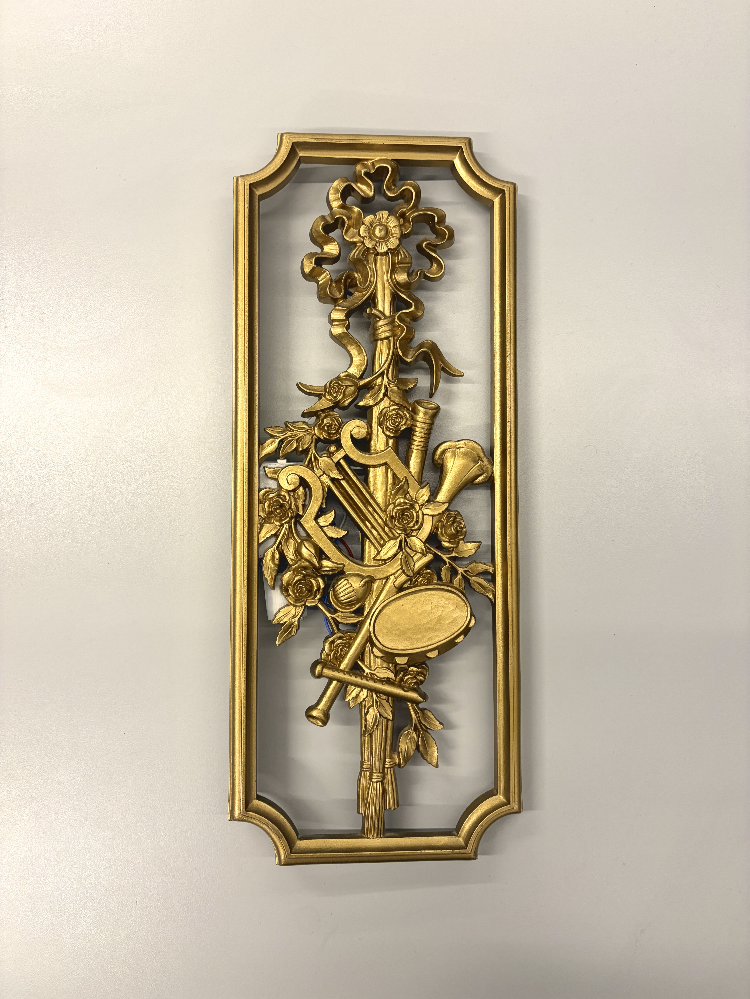
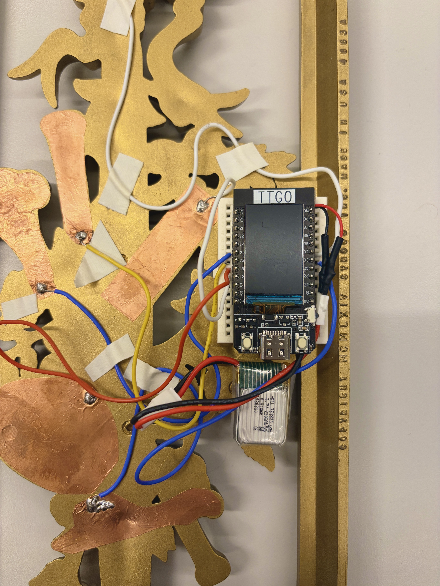

Front of device.
My creative goal was to expand upon my favorite project thus far, that being the Interactive Orchestra from Mod 3. This piece has inspired the most delight, with many friends exclaiming about how fun it was to interact with and how it reminded them of the technical aspects of classic childhood games such as Operation.
I wanted the device to be fully interactive, since version 1 was limited to the sounds that the five instruments on the decor piece could make. To achieve this goal, I explored wireless musicality by adding the NimBLE library built for Arduino development. The device is now able to run unplugged from other technology through a LiPo battery, so that the user may hold it up and "strum" the object almost as its own type of instrument. I also gave the users more creative control through the new recording loop mode that allows them to record a snippet of their voice or a found sound to layer on top of the instruments. The new mode is activated through long-pressing the mode switch sensor. Thus, the device now allows the users to first test out each individual instrument sound, then try layering them in interesting ways, and finally create truly unique pieces of music by add their own voices.
V1 Mode 0/1 switch demo.
Real life demo with friends.
Something other artists should look out for on this project is tuning the touch threshold to
function according to the incorporation of wireless Bluetooth transmissions. When I was first
able to connect my ESP wirelessly to my laptop using Bluetooth Low Energy (BLE), the copper
touch sensors stopped functioning as normal. The terminal outputs showed no messages being sent
through even though it said the program is connected with the ESP32 via its NimBLE stack. Since
the only big change made was in which power source I used (USB-C to battery), I reasoned that
the change in electric field affected capacitive touch. Thus, I increased the touch threshold
in main.cpp from 25 to 50, and the laptop was able to receive messages from the ESP32 when the
sensors were touched.
Another technical challenge I encountered was with the battery itself. Initially, the LiPo battery
was seemingly not powering on my ESP32 even after extensive charging. To solve this, I acquired two
other batteries which I charged, then uploaded some test code to display a welcome screen on the
display to check if the battery was powering on the ESP32 when it was plugged in. Since my project
deliberately concealed the ESP32, I previously did not think to use the display to check the state
of my batteries. If other artists pursuing this project do not have access to tools such as a
multimeter to check the voltage of their batteries when making the transition to wireless transmission,
I recommend incorporating test code for the display of the ESP32.

Wiring and breadboard closeup.